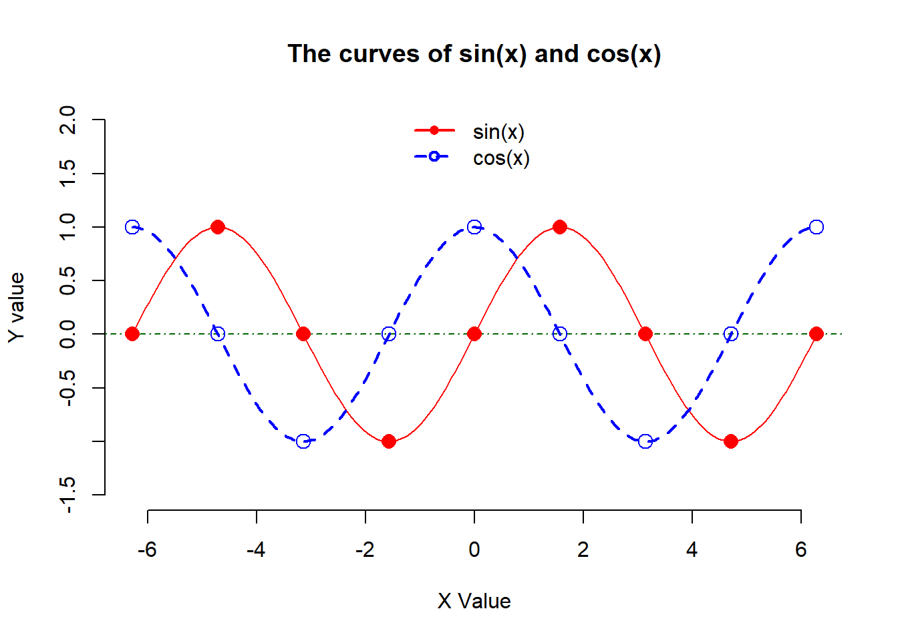
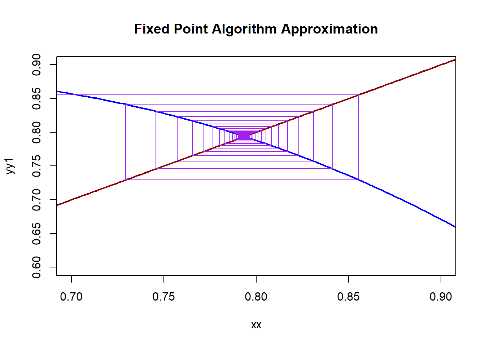

Topic 3 Scientific Computing with R
R was initially created by group of statisticians for data analysis (for free). In the past decade, many people from other disciplines contributed to the continuous development of this program. It is among the top programming language in data science and machine learning and widely used to perform a variety of non-statistical tasks, including data processing, information visualization, data mining, and scientific computing, etc.
During the semester, I will write series of short notes on R to implement numerical algorithms to be covered in the course. I will also write one or two lab notes to cover optimization problems in machine learning and data science.
The following three books focus on using R for scientific computing. You can find one of them as a reference when you make programs for this class.
Introduction to scientific programming and simulation using R. This book can be found from internet.
Mastering Scientific Computing with R. WCU library has this eBook. You can access this book using the following link. https://ebookcentral.proquest.com/lib/wcupa/detail.action?pq-origsite=primo&docID=1936749
Using R Numerical Analysis in Science and Engineering. You can also find this from internet.
For those who programmed in MATLAB, you can check the following page to see the back-to-back syntax comparison between R and MATLAB https://mathesaurus.sourceforge.net/octave-r.html.
R is case sensitive!.
3.1 Vectors and Matrices
Vectors and matrices are two major R objects that will be used frequently in numerical analysis. This section outlines the definition and utilization of vectors and matrices.
3.1.1 Vectors
A vector is a collection of like elements without dimensions. The vector element or elements must be of the same types of data (either character, numeric, or logical).
3.1.1.1 Definition
An R vector defined by a built-in R function c() (c stands for concatenate). The following are examples of basic types of vectors.
intVec <- c(1,3,6,7) # vector of integers
charVec = c('One','Two','Three') # vector of characters, string vector
logiVec = c(FALSE, TRUE) # logical vectors
single.Val.Vec = c("convergent") # single element character vector
emptyVec = NULL # empty vector / null vector
##
intVec # type the of the name of intVec## [1] 1 3 6 73.1.1.2 Use of Vector Index
One can access elements in a vector through index using square bracket [idx]. Similar to MATLAB, R index starts from 1!
exampleVec = c(1, 2, 3, 2, 7, 9, 11, 15, 7, 2) # use this vector as an example
###
exampleVec[7] # extract the 7th element in the vector## [1] 11## [1] 1 2 3## [1] 1 2 3 2 7 9 15 7 2## [1] 2 7 9 11 15 7 2duplVec = exampleVec # duplicate an existing vector and rename it
## The following code replaces elements with NEW elements
duplVec[c(9,10)] = c(99,100) # replace elements 7, 4 with 99 and 100 respectively.
duplVec # display the modified vector## [1] 1 2 3 2 7 9 11 15 99 1003.1.1.3 Operations Between Vectors
The following examples show the operations commonly used in error analysis.
A = c(5, 2, 3, 7, 5, 1, 9)
B = c(3, 2, 4, 8, 2, 7)
## next we define different new vectors using A and B
new01 = c(A,B) # concatenate A and B
new01 # display new01## [1] 5 2 3 7 5 1 9 3 2 4 8 2 7## [1] 0 -3 -2 2 0 -4 4## [1] 25 4 9 49 25 1 81## [1] 10 4 6 14 10 2 183.1.1.4 Shortcuts for Defining Vectors
There are shortcuts to define patterned vectors (sequence). The following are few examples.
## [1] 1 3 5 7 9 11 13 15 17 19 21 23 25 27 29 31 33 35 37 39 41 43 45 47 49 51 53 55 57 59 61 63 65 67 69 71 73
## [38] 75 77 79 81 83 85 87 89 91 93 95 97 99seq.vec01 = seq(1, 99, length = 5) # This defines a sequence with 5 numbers that are equally spaced between 1 and 99.
seq.vec01## [1] 1.0 25.5 50.0 74.5 99.0## [1] 1 1 1 1 1 1 1 1 1 1 1 1 1 1 1 1 1 1 1 1 1 1 1 1 1 1 1 1 1 1 1 1 1 1 1 1 1 1 1 1 1 1 1 1 1 1 1 1 1 1 1 1 1 1 1
## [56] 1 1 1 1 1 1 1 1 1 1 1 1 1 1 1 1 1 1 1 1 1 1 1 1 1 1 1 1 1 1 1 1 1 1 1 1 1 1 1 1 1 1 1 1 1## [1] 3 4 5 6 7 8 9 10## [1] "a" "b" "c" "d" "e" "f" "g" "h" "i" "j" "k" "l" "m" "n" "o" "p" "q" "r" "s" "t" "u" "v" "w" "x" "y" "z"## [1] "A" "B" "C" "D" "E" "F" "G" "H" "I" "J" "K" "L" "M" "N" "O" "P" "Q" "R" "S" "T" "U" "V" "W" "X" "Y" "Z"## [1] "A" "B" "C" "D" "E" "F" "G"3.1.2 Matrices
R matrices are two dimensional table indexed by two subscripts using \([i,j]\), where \(i\) = index of row of the matrix and \(j\) = index of the column of the matrix. On can access the matrix using index \([i,j]\). The following are some examples of matrices
vec0 = 1:36
m01 = matrix(vec0, ncol = 9, byrow = TRUE) # this defines a 4x9 matrix, the cells were filled from vec0 by rows
m01 ## [,1] [,2] [,3] [,4] [,5] [,6] [,7] [,8] [,9]
## [1,] 1 2 3 4 5 6 7 8 9
## [2,] 10 11 12 13 14 15 16 17 18
## [3,] 19 20 21 22 23 24 25 26 27
## [4,] 28 29 30 31 32 33 34 35 36m02 = matrix(vec0, nrow = 6, byrow = FALSE) # this defines a 6x6 square matrix, cells were filled from vec0 by column
m02## [,1] [,2] [,3] [,4] [,5] [,6]
## [1,] 1 7 13 19 25 31
## [2,] 2 8 14 20 26 32
## [3,] 3 9 15 21 27 33
## [4,] 4 10 16 22 28 34
## [5,] 5 11 17 23 29 35
## [6,] 6 12 18 24 30 36## [,1] [,2] [,3] [,4] [,5]
## [1,] NA NA NA NA NA
## [2,] NA NA NA NA NA
## [3,] NA NA NA NA NA
## [4,] NA NA NA NA NA
## [5,] NA NA NA NA NA
## [6,] NA NA NA NA NA## [,1] [,2] [,3] [,4] [,5]
## [1,] NA NA NA NA NA
## [2,] NA NA NA NA NA
## [3,] NA NA NA NA NA
## [4,] NA NA NA NA 99
## [5,] NA NA NA NA NA
## [6,] NA NA NA NA NA
3.2 Built-in Mathematical Functions and Operators
R has built in most of the commonly used mathematical functions and important scalars. The following is a partial list.
3.2.1 Arithmetic Operators
+ – addition
– – subtraction
* – multiplication
/ – division
^ – raise to the power of
3.2.2 Basic Mathematical Functions
abs() - absolute value
sqrt() - square root
round() - rounding function
ceiling() - rounding up
floor() - rounding down
sign() - sign of a number
exp() - natural base exponential function
log() - natural base logarithmic function
log10() - base 10 logarithmic function
3.2.3 Trigonometry
sin() – sine
cos() – cosine
tan() – tangent
asin() – sine inverse
acos() – cosine inverse
atan() – tangent inverse
3.2.4 Linear Algebra
+ – element-wise addition
– – element-wise subtraction
* – element-wise multiplication
/ – element-wise division
%*% – matrix multiplication
t() – transpose
eigen() – eigenvalues and eigenvectors
solve() – inverse of matrix
rbind() – combines vectors of observations horizontally into matrix class
cbind() – combines vectors of observations vertically into matrix class
3.3 Graphic Functions in Base R
Base R graphical system contains a set of high-level plotting functions such as plot(), hist(), barplot(), etc. and also a set of low-level functions that are used jointly with the high-level plotting functions such as points(), lines(), text(), segments(), etc. to make a flexible graphical system.
Next we use a simple example to illustrate the basic graphic functions. We draw the curves of two functions \(f_1(x) = \sin(x)\) and \(f_2(x) = \cos(x)\) over interval \([-2\pi, 2\pi]\).
x = seq(-2*pi, 2*pi, length = 200) # define a sequence of numbers on the interval
f1 = sin(x) # evaluate f1 = sin(x) at these values
f2 = cos(x) # evaluate f2 = cos(x) at these values
##
plot(x, f1, # x- and y- coordinates
type = "l", # lower case l in the quote means line. The default option is point. "b" = both line and point.
xlab = "X Value", # label of x-axis, if not specified, the name of x vector will be used
ylab = "Y value",
ylim = c(-1.5, 2.0), # the limits of y-axis, must be a vector of two values. The default limits are min and max of f1
xlim = c(-2*pi, 2*pi), # the limits of x-axis, if it is not provided, the min and max values of x will be used.
col = "red", # select a color for the line
lty = 1, # line type. 1 = solid, 2 = dash, ....
cex = 1.2, # size, default = 1
main = "The curves of sin(x) and cos(x)", # the title of the plot.
bty = "n" # remove the outbox on the plot. The default plot has an outer box.
)
abline(h = 0, lty = 4, col = "darkgreen") # add a horizontal line at y = 0
lines(x, f2, lty = 2, lwd = 2, col = "blue") # cos(x) curve to the existing plot. Caution: use lines(), not plot().
## add a few special points on both curves
pt.x = seq(-2*pi, 2*pi, length = 9) # select 9 x-coordinates to make 9 points
pt.y1 = sin(pt.x) #
pt.y2 = cos(pt.x)
## Adding points to the two curves
points(pt.x, pt.y1, # add points to f1 = sin(x)
pch = 16, # point types, there 20+ types of points in R
col = "red",
cex = 1.5) # size of the points, default cex = 1
points(pt.x, pt.y2, pch = 21, col = "blue", cex = 1.5)
## adding legends
legend("top", # location of the legend, other locations: "bottom", "topleft", "topright" bottomleft", "bottomright", providing
# the coordinates of the location to place the legend.
c("sin(x)", "cos(x)"), # label of the corresponding curves
pch = c(16, 21), # the corresponding point type
col = c("red", "blue"), # corresponding color
lty = c(1, 2), # corresponding line type
lwd = c(2,2), # corresponding line width
bty = "n") # no box placed around the legend
3.5 Control Statements
Control statements are expressions used to control the execution and flow of the program based on the conditions provided in the statements. These structures are used to decide after assessing the variable.
There are 8 types of control statements in R:
ifconditionif-elseconditionfor loop- nested loops
while looprepeatandbreakstatementsreturnstatementnextstatement
We will introduce if/if-else statements and for/while loops in this note and use them to implement the algorithm with the given pseudo-code given in the lecture note.
3.5.1 Conditional Statements
3.5.1.1 IF Statement
This control structure checks whether the expression provided in parenthesis is true or not. If true, the execution of the statements in braces {} continues. The syntax is given by
Syntax:
if(expression){
statements
....
....
}Example 1:
x <- 100 # numerical scalar
##
if(x > 10){ # conditional statement
print(paste(x, "is greater than 10")) # paste() is a string function. one
# can pass a numerical argument to
# this string function.
}## [1] "100 is greater than 10"Example 2:
3.5.1.2 IF-ELSE Statement
If the if condition is determined as true, it will execute the statements written inside the if block. Otherwise, if the if condition is not satisfied, it will return the statements written inside the else block.
Syntax
if (condition) {# The statement will execute
# if the condition is satisfied.
statement_1
...........
}
else { # The statement will execute if the condition
# turns out to be not satisfied.
statement_2
...........
}Example 3
x <- pi # numerical scalar
##
if(x == 3.14159){ # conditional statement
print(paste(x, "is pi!"))
} else {
print(paste(x, "is NOT pi!")) # Caution: x will be printed as a string!
}## [1] "3.14159265358979 is NOT pi!"3.5.1.3 ELSE-IF Statement
It continuously checks certain conditions. If any of the if the condition is satisfied, it will return statements written inside the block. If none of the if the condition is true, it will execute the statements written inside the else block.
Syntax
if (condition){
expression
} else if (condition){
expression
} else if (condition){
expression
} else { # The statement will execute if none of the if
# conditions turn out to be true.
statement
}Example 4
## [1] 10
3.5.2 Loops in R
A loop is used to perform repetitive tasks. There are three types of loops in R: for-loop, while-loop, and repeat-while-loop. These loops are used with if-else like conditional statements to execute statements conditionally.
3.5.2.1 FOR Loops
A for-loop will run statements a pre-set number of times n.
Syntax
for (i in 1:n){
executable statements
}Example 5
Find 10 factorial (\(10!\)). Note that \(10! = 0\times 1\times 2\times \cdots \times 9 \times 10\). We only need 10 iterations of the cumulative product to find the value.
result = 1 # initial value to start the process of iteration
for(i in 1:10){
result = result * i
}
cat("\n 10! =", result,".\n")##
## 10! = 3628800 .for-loop is usually used jointly with other conditional statements defined by if-else, break, next, etc.
Example 6. Let X =c(10 18 42 46 11 29 15 22 20 8 49 47 1 16 23 13 32 27 19 37 31 43 39 24 44 12 3 2 9 7 50 4 30 6 45 38 17 14 26 36 21 41 40 5 33 34 25 28 35 48). We want to select 10 smallest odd numbers and store them in a vector.
# define the vector
X=c(10, 18, 42, 46, 11, 29, 15, 22, 20, 8, 49, 47, 1, 16, 23, 13, 32, 27,
19, 37, 31, 43, 39, 24, 44, 12, 3, 2, 9, 7, 50, 4, 30, 6, 45, 38, 17,
14, 26, 36, 21, 41, 40, 5, 33, 34, 25, 28, 35, 48)
# Note that the largest of the first 10 smallest odd number is 19.
oddVec = NULL # store the first 10 smallest odd numbers
k = 1 # initial index of oddVec
for (i in 1:100){
xi = X[i]
I = X[i]%%2 # %% gives the remainder of the division
if(I == 0){
next # skip the current iteration and jump to the next
} else{
if(xi > 19) {
next # skip the current iteration and jump to the next
} else{
oddVec[k] = xi
if (k == 10) break # beak the iteration once all
# desired odd numbers are selected!
k = k + 1 # update the index for the next valid odd number
}
}
}
oddVec## [1] 11 15 1 13 19 3 9 7 17 53.5.2.2 WHILE Loops
The while loop repeats statements as long as a certain condition is true. Stated another way, the while loop will stop when the condition is false (for example, the user types 0 to exit). Each time the loop starts running, it checks the condition.
See the example in the next section.
3.5.2.3 REPEAT-IF-WHILE Loops
This loop is equivalent to the DO-WHILE loop in other languages such as SAS and C++.
The repeat loop does not have any condition to terminate the loop. We need to put an exit condition implicitly with a break statement inside the loop.
Syntax:
repeat{
statements...
if(condition){
break
}
}Example 6
## [1] 1
## [1] 2
## [1] 3
## [1] 4
3.6 Numerical Example
Example 4 (Numerical Implementation): The nth Taylor polynomial for \(f (x) = e^x\) expanded about \(x_0 = 0\) is \[ P_n(x) =\sum_{i=0}^n \frac{x^i}{i!} \] and the value of \(e\) to six decimal places is 2.718282. Construct an algorithm to determine the minimal value of \(n\) required for \[ |e - P_n(1)| < 10^{-5}, \] without using the Taylor polynomial remainder term.
Solution: The objective is to determine the degrees of the Taylor polynomial evaluated at \(x = 1\) to approximate \(e\). The input values are (1) tolerance TOL and the initial degree of the Taylor polynomial. The output is the smallest degree of the Taylor polynomial that meets \(|e - P_n(1)| < TOL\).
Caution: In general, one should consider including two stopping rules: error tolerance and maximum iterations. In this particular example, the maximum number of iterations is simply the solution to the problem. Therefore, there is one stopping rule: TOL
3.6.1 VERSION 1
This is modified from the pseudo-code from the example in the lecture note.
INPUT initial degree: n,
tolerance: TOL,
OUTPUT the desired degree N of the polynomial
Step 1. SET n = 0;
Pn = 1;
ERR = exp(1) - 1;
Step 2. WHILE ERR >= TOL DO:
1. n = n + 1
Pn = Pn + 1/n! # n! = n factorial
ERR = exp(1) - Pn # exp(1) = 2.718282
2. IF |ERR| < TOL DO:
OUTPUT (N)
WRITE (tolerance achieved!)
STOP
ELSE DO: # optional: print out something
# to monitor the iterative process
WRITE(iteration number)
ENDIF
ENDWHILE
The following is the R code for implementing the above pseudo-code.
n = 0
TOL = 10^(-5)
Pn = 1
ERR = exp(1) - Pn
# Loop Starts
while(ERR >= TOL){
n = n + 1
Pn = Pn + 1/factorial(n)
ERR = exp(1) - Pn
if(ERR < TOL){
cat("\n\n The desired degrees of the Taylor polynomial is ", n+1,". \n")
cat("Tolerance achieved!\n\n\n")
} else{
cat("\n Iteration number: ", n, ". ")
}
}##
## Iteration number: 1 .
## Iteration number: 2 .
## Iteration number: 3 .
## Iteration number: 4 .
## Iteration number: 5 .
## Iteration number: 6 .
## Iteration number: 7 .
##
## The desired degrees of the Taylor polynomial is 9 .
## Tolerance achieved!3.6.2 Version 2
Change the order for updating the degrees of the polynomial and add additional outputs
INPUT initial degree: n,
tolerance: TOL,
OUTPUT the desired degree N of the polynomial
Step 1. SET n = 0;
Pn = 0;
ERR = exp(1);
Step 2. WHILE ERR >= TOL DO:
1. Pn = Pn + 1/n! # n! = n factorial
ERR = exp(1) - Pn # exp(1) = 2.718282
2. IF |ERR| < TOL DO:
OUTPUT (N, Pn, absolute error)
WRITE (tolerance achieved!)
STOP
ELSE DO: # optional: print out something
# to monitor the iterative process
WRITE (iteration number, absolute error)
n = n + 1
ENDIF
ENDWHILE
The following is the R code for implementing the above pseudo-code.
n = 0
TOL = 10^(-5)
Pn = 0
ERR = exp(1)
# Loop Starts
while(ERR >= TOL){
Pn = Pn + 1/factorial(n)
ERR = exp(1) - Pn
if(ERR < TOL){
cat("\n\nTolerance achieved!\n\n")
cat("\n degree N = ", n+1, ".")
cat("\n e = ", exp(1), ".")
cat("\n Pn =", Pn, ".")
cat("\n Absolute Error =", ERR, ".")
} else{
n = n + 1
cat("\n Iteration numer: ", n, ". Absolute Error = ", ERR, ".")
}
}##
## Iteration numer: 1 . Absolute Error = 1.718282 .
## Iteration numer: 2 . Absolute Error = 0.7182818 .
## Iteration numer: 3 . Absolute Error = 0.2182818 .
## Iteration numer: 4 . Absolute Error = 0.05161516 .
## Iteration numer: 5 . Absolute Error = 0.009948495 .
## Iteration numer: 6 . Absolute Error = 0.001615162 .
## Iteration numer: 7 . Absolute Error = 0.0002262729 .
## Iteration numer: 8 . Absolute Error = 2.786021e-05 .
##
## Tolerance achieved!
##
##
## degree N = 9 .
## e = 2.718282 .
## Pn = 2.718279 .
## Absolute Error = 3.058618e-06 .3.7 User Defined Functions
One of the great strengths of R is that it allows users to extend the capacity of R through user-defined functions. Functions are often used to encapsulate a sequence of expressions that need to be executed repetitively. We have made code to implement bisection and fixed-point methods by specific examples. We may want to write the R function of these implementations so we can use them for other root-finding problems with the appropriate input information.
The syntax of the general user-defined R function has the following form
myfunction <- function(arg1, arg2, ... ){
statements
return(object)
}arg1, arg2, ... are arguments that are passed into the function. The arguments could be any objects such as vectors and other user-defined R functions.
Example 1 Finding the standard deviation of an input vector.
sdfun <- function(x) {
res <- sqrt(sum((x - mean(x))^2) / (length(x) - 1))
return(res)
}
##
vec = c(1,4,2,6,-3, -5)
sdfun(x = vec) # or simply sdfun(vec)## [1] 4.167333We have defined functions in implementing root-finding methods.
3.7.1 Writing R Functions for Root-finding Methods
As an example, we will write an R function to implement the bisection method for finding the root for any given equation on ver an interval (if it exists). Two versions of R functions will be presented in the following.
3.7.1.1 Function with Numerical Outputs
We simply wrap up the example code in the lecture note to make the following function.
num.FixedPoint = function(fn, # function that satisfies f(x) = x
a, # lower limit of the interval [a, b]
b, # upper limit of the interval [a, b]
TOL, # error tolerance
N, # maximum number of iterations
x0, # initial value of x
detail, # intermediate output
...){
gfun = fn
x = x0
ERR = Inf
n = 0
##
while (ERR > TOL){
n = n + 1
new.x = gfun(x)
ERR = abs(new.x - x)
if(ERR < TOL){
cat("\n\nThe algorithm converges!")
cat("\nThe approximate root is:", new.x,".")
cat("\nThe absolute error is:", ERR, ".")
cat("\nThe number of iterations is:", n, ".")
break
} else{
if(ERR > 10^7){
cat("\n\nThe algorithm diverges!")
break
} else{
if(detail == TRUE){
cat("\nIteration:",n,". Estimated root:", new.x, ". Absolute error:", ERR,".")
}
x = new.x # update x value!!!
}
}
if(n == N){
cat("\n\nThe maximum number of iterations is achieved!")
break
}
}
}Next, we use several examples.
Example 1 Using the fixed-point method to find the approximate root of \(x^3 - 7x +2 = 0\). To use the fixed-point method, we rewrite the equation into the form \((x^3 + 2)/7 = x\). Then \(g(x) = (x^3 + 2)/7\) will be the function to be passed into the function.
###
fun0 = function(x) (x^3 + 2)/7
num.FixedPoint(fn = fun0, a = 0, b = 2, TOL = 10^(-6), N = 200, x0 =1.5, detail = TRUE)##
## Iteration: 1 . Estimated root: 0.7678571 . Absolute error: 0.7321429 .
## Iteration: 2 . Estimated root: 0.3503903 . Absolute error: 0.4174668 .
## Iteration: 3 . Estimated root: 0.2918598 . Absolute error: 0.0585305 .
## Iteration: 4 . Estimated root: 0.2892659 . Absolute error: 0.002593907 .
## Iteration: 5 . Estimated root: 0.289172 . Absolute error: 9.385572e-05 .
## Iteration: 6 . Estimated root: 0.2891687 . Absolute error: 3.364631e-06 .
##
## The algorithm converges!
## The approximate root is: 0.2891686 .
## The absolute error is: 1.20578e-07 .
## The number of iterations is: 7 .Example 2: Calculate \(1/\sqrt{2}\) by using the fixed-point method. Note that \(f(x) = x^2 - 1/2\). To use the fixed point method, we need \(g(x) = x -x^2 +1/2\) as the input function.
###
fun0 = function(x) x - x^3 + 1/2
num.FixedPoint(fn = fun0, a = -1, b = 2, TOL = 10^(-5), N = 200, x0 =0.7, detail =FALSE)##
##
## The algorithm converges!
## The approximate root is: 0.7937048 .
## The absolute error is: 9.128962e-06 .
## The number of iterations is: 83 .3.7.1.2 Function with More Optional Outputs
We include graphics the function created previously.
FixedPointAlgR = function(fn, # function that satisfies f(x) = x
a, # lower limit of the interval [a, b]
b, # upper limit of the interval [a, b]
TOL, # error tolerance
N, # maximum number of iterations
x0, # initial value of x
detail=TRUE, # intermediate numerical outputs
graphic=TRUE, # intermediate graphic outputs
x.lim, # x-axis of graphic window
y.lim, # y-axis of graphic window
sleep, # sleep time between iterations
...){
gfun = fn # rename the input function used in the function
x = x0 # rename the initial value used in the function
ERR = Inf # initial error (a big number to start the iteration)
n = 0 # initial iteration counter - iterator or index
##
if(graphic==TRUE){
xlimit=c(a-0.1*abs(b-a), b+0.1*abs(b-a)) # x-limit in the graphic window
xx=seq(a-0.1*abs(b-a), b+0.1*abs(b-a), length = 2000) # sequence of x values
yy1 = gfun(xx) # evaluate g(x)
yy2 = xx # evaluate diagonal
plot(xx, yy1, ylim = y.lim, xlim = x.lim, type = "l", lwd = 2, lty = 1, col = "blue")
lines(xx,yy2, lwd = 2, lty = 1, col ="darkred") # add line y = x
title("Fixed Point Algorithm Approximation") # add title to the graphic
}
##
while (ERR > TOL){
Sys.sleep(sleep) # put the system to sleep
n = n + 1
new.x = gfun(x)
ERR = abs(new.x - x)
if(ERR < TOL){
cat("\n\nThe algorithm converges!")
cat("\nThe approximate root is:", new.x,".")
cat("\nThe absolute error is:", ERR, ".")
cat("\nThe number of iterations is:", n, ".")
break
} else{
if(ERR > 10^7){
cat("\n\nThe algorithm diverges!")
break
} else{
if(detail == TRUE){
cat("\nIteration:",n,". Estimated root:", new.x, ". Absolute error:", ERR,".")
}
if(graphic==TRUE){
segments(new.x, new.x, new.x, gfun(new.x), col="purple")
segments(new.x, gfun(new.x), gfun(new.x), gfun(new.x), col="purple")
}
x = new.x # update x value!!!
}
}
if(n == N){ # checking iteration limit
cat("\n\nThe maximum number of iterations is achieved!")
break
}
}
}
Example 1 (Revisited)
###
fun0 = function(x) (x^3 + 2)/7
FixedPointAlgR(fn = fun0, a = 0, b = 1, TOL = 10^(-6), N = 200,
x0 =0.35, detail = TRUE, graphic = FALSE,
x.lim=c(0.285, 0.294), y.lim=c(0.28, 0.32), sleep = 0.1)##
## Iteration: 1 . Estimated root: 0.2918393 . Absolute error: 0.05816071 .
## Iteration: 2 . Estimated root: 0.2892651 . Absolute error: 0.002574143 .
## Iteration: 3 . Estimated root: 0.289172 . Absolute error: 9.313374e-05 .
## Iteration: 4 . Estimated root: 0.2891687 . Absolute error: 3.33874e-06 .
##
## The algorithm converges!
## The approximate root is: 0.2891686 .
## The absolute error is: 1.196502e-07 .
## The number of iterations is: 5 .
Example 2 (Revisited)
###
fun0 = function(x) x - x^3 + 1/2
FixedPointAlgR(fn = fun0, a = -1, b = 2, TOL = 10^(-5), N = 200,
x0 =-1.2, detail =FALSE, graphic = TRUE,
x.lim=c(0.7, 0.9), y.lim=c(0.6, 0.9), sleep = 0.1)
##
##
## The algorithm converges!
## The approximate root is: 0.7937047 .
## The absolute error is: 8.942928e-06 .
## The number of iterations is: 85 .